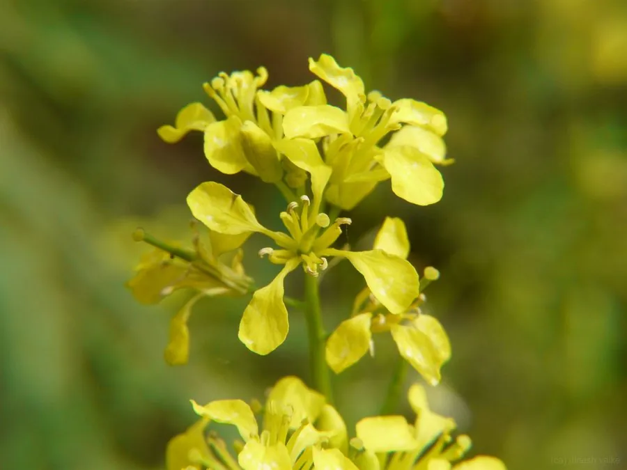

农作物与经济植物 · 植物界
芥菜 Brassica juncea

芥菜的茎叶可腌制酸菜，种子可制芥末和榨油，辛辣味浓，是芥菜类蔬菜与调味品的重要来源，栽培广泛。
- 分类
- 门被子植物门纲双子叶植物纲目十字花目科十字花科属芸薹属
- 栖息环境
- 冷凉湿润的菜地，耐寒性较强，喜肥沃土壤
- 地理分布
- 原产亚洲，现中国各地及世界多国广泛栽培
- 保护级别
- 暂无评估（栽培作物）
物种志
芥菜是一年生或二年生草本，株高 0.3–1 m，茎直立，有分枝。叶片大而宽，边缘有锯齿或深裂，表面粗糙，有蜡粉。花为总状花序，黄色，四瓣十字形。果实为角果，内含球形种子，颜色有黄、褐、黑等，种子含辛辣的芥子油。芥菜有叶用、茎用、根用和籽用等多种类型。
芥菜原产亚洲，中国是芥菜的重要起源地之一，栽培历史已有数千年。它喜冷凉湿润、光照充足，耐寒性较强，适宜在疏松肥沃、排水良好的土壤中种植。叶用芥菜（雪里蕻、包心芥）可腌制酸菜、梅干菜；茎用芥菜（榨菜、儿菜）可腌制榨菜；籽用芥菜种子可制芥末、榨油。芥菜的辛辣味来自芥子油苷，能增进食欲。中国四川、浙江、广东等地是主产区。
形态与习性
- 株高0.3–1 m
- 叶大而宽，边缘有锯齿
- 花黄色总状花序，四瓣
- 种子可制芥末、榨油
- 类型叶用、茎用、根用与籽用
趣味知识
- 榨菜、雪里蕻、儿菜其实都是芥菜的不同类型。
- 芥菜种子的辛辣味来自芥子油苷，可制成芥末。
- 芥菜是亚洲原产的古老蔬菜，中国栽培历史已有数千年。